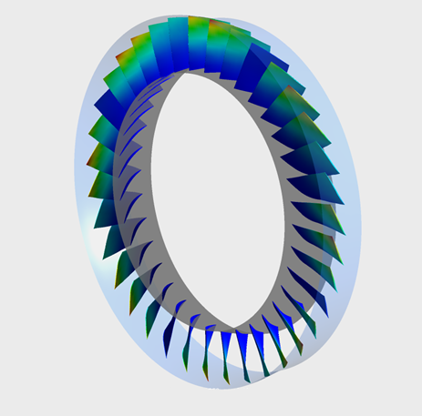
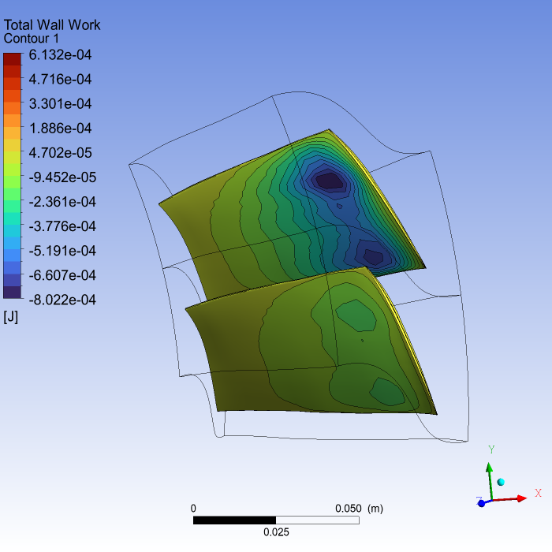
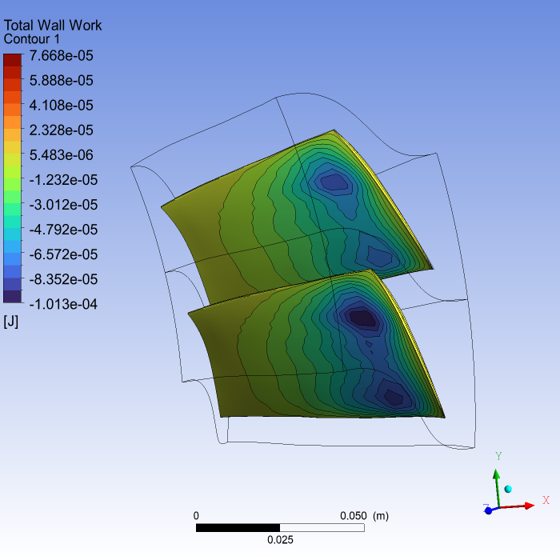

Note
Go to the end to download the full example code.
Set up a Fourier Transformation Blade Flutter case#
This example shows how to set up a Fourier Transformation Blade Flutter case in PyCFX.
Model overview
This example sets up a Transient Blade Flutter simulation using both time integration and harmonic balance transient methods with the Fourier transformation pitch change model. The setup is described in detail in the CFX tutorial Fourier Transformation Method for a Blade Flutter Case.
The example uses an axial compressor geometry. The full geometry consists of one rotor containing 36 blades.
Workflow tasks
The Fourier Transformation Blade Flutter example guides you through these tasks:
Use a PreProcessing session to set up a solver run without the transient blade row method to provide initial conditions.
Run the solver to generate the initial conditions.
Modify the PreProcessing session to set up a solver run with the transient blade row time integration method.
Run the solver to generate the time integration results.
Modify the PreProcessing session to set up a solver run with the transient blade row harmonic balance method.
Run the solver to generate the harmonic balance results.
Postprocess both the time integration and harmonic balance results.
Some tasks can execute while previous ones are still in progress. This means you do not need to wait for a solver run to complete before modifying the setup for the next simulation.
{kind=link}

Initial setup#
Perform required imports#
Perform the required imports. It is assumed that the ansys-cfx-core package has been
installed.
import os
import ansys.cfx.core as pycfx
from ansys.cfx.core import examples
from ansys.cfx.core.utils.cfx_version import CFXVersion
Download required files#
mesh_file_name = examples.download_file(
"R37ATM_60k.gtm",
"pycfx/fourier_blade_flutter",
save_path=os.getcwd(),
)
mode_profile_file_name = examples.download_file(
"R37_mode1_1p.csv",
"pycfx/fourier_blade_flutter",
save_path=os.getcwd(),
)
inlet_profile_file_name = examples.download_file(
"R37_inlet.csv",
"pycfx/fourier_blade_flutter",
save_path=os.getcwd(),
)
Initial preprocessing#
Start a PreProcessing session (CFX-Pre) and create a new case#
pypre = pycfx.PreProcessing.from_install()
pypre.file.new_case()
Import a mesh#
The mesh file, R37ATM_60k.gtm, should already have been downloaded to the current working
directory earlier in this script.
pypre.file.import_mesh(file_name=mesh_file_name)
Transform the mesh#
The imported mesh contains a single passage mesh. Because the Fourier Transformation method requires two passages, the mesh must be transformed.
PyCFX currently requires mesh transformations to be performed using the CFX Command Language
(CCL). Passages to Model is set to 2 to duplicate the original mesh.
mesh_transformation_ccl = """
MESH TRANSFORMATION:
Delete Original = Off
Number of Copies = 1
Option = Turbo Rotation
Passages in 360 = 36
Passages per Mesh = 1
Passages to Model = 2
Principal Axis = Z
Rotation Angle Option = Semi-Automatic
Rotation Option = Principal Axis
Target Location = Rotor Passage Main
END
> gtmTransform Rotor Passage Main
"""
pypre.execute_ccl(mesh_transformation_ccl)
Expand the profile#
The profile describing the frequency and blade mode shape for one blade is provided. In preparation for a two-passage Fourier Transformation setup, the profile must be expanded and initialized to make it ready for use in the boundary condition specifications.
The single passage profile file, R37_mode1_1p.csv, should already have been downloaded to the
current working directory earlier in this script.
PyCFX currently requires profile expansion and initialization to be performed using the CFX Command Language (CCL).
rotor_profile_1p_file_name = mode_profile_file_name
rotor_profile_36p_file_name = "./R37_mode1_36p.csv"
rotor_profile_ccl = f"""
&replace TRANSFORM PROFILE DEFINITION:
Initialise Target Profile = On
Source Profile = {rotor_profile_1p_file_name}
Target Profile = {rotor_profile_36p_file_name}
Transformation Order = Transformation 1
PROFILE TRANSFORMATION:Transformation 1
Option = Expansion
EXPANSION DEFINITION:
Option = Expand to Full Circle
Passages in 360 = 36
Passages in Profile = 1
Theta Offset = 0 [degree]
Use Profile Instancing = Off
ROTATION AXIS DEFINITION:
Option = Principal Axis
Principal Axis = Z
END
END
END
END
> transformProfileData
"""
pypre.execute_ccl(rotor_profile_ccl)
Initialize the inlet profile#
The inlet profile file, R37_inlet.csv, should already have been downloaded to the
current working directory earlier in this script.
inlet_profile_ccl = f"""
> initialiseProfileData File Name={inlet_profile_file_name}, Generate CCL=True, Embed Data=False
"""
pypre.execute_ccl(inlet_profile_ccl)
Set up the domain#
The automatically created domain must be deleted before a new domain with a more meaningful name is created.
del pypre.setup.flow["Flow Analysis 1"].domain["Default Domain"]
pypre.setup.flow["Flow Analysis 1"].domain["R1"] = {}
r1_domain = pypre.setup.flow["Flow Analysis 1"].domain["R1"]
r1_domain.location = "Entire Rotor Passage"
r1_domain.fluid_definition["Fluid 1"].material = "Air Ideal Gas"
r1_domain.domain_models.reference_pressure.reference_pressure = "0 [atm]"
Set up the domain motion and deformation.
r1_domain.domain_models.domain_motion.option = "Rotating"
r1_domain.domain_models.domain_motion.angular_velocity = "-1800 [radian s^-1]"
r1_domain.domain_models.domain_motion.alternate_rotation_model = True
r1_domain.domain_models.mesh_deformation.option = "Regions of Motion Specified"
r1_domain.domain_models.mesh_deformation.displacement_relative_to = "Initial Mesh"
r1_domain.domain_models.mesh_deformation.mesh_motion_model.option = "Displacement Diffusion"
Set up the remaining physical models on the domain.
r1_domain.fluid_models.heat_transfer_model.option = "Total Energy"
r1_domain.fluid_models.turbulence_model.option = "SST"
r1_domain.fluid_models.turbulent_wall_functions.option = "Automatic"
r1_domain.fluid_models.turbulence_model.reattachment_modification.option = "Reattachment Production"
Set up the boundary conditions#
Define some boundary condition names so that they can be used in multiple places.
r1_inlet_name = "R1 Inlet"
r1_outlet_name = "R1 Outlet"
r1_blade_name = "R1 Blade"
r1_periodic_name = "R1 to R1 Periodic"
r1_sampling_name = "R1 Sampling Interface"
Add the R1 Inlet boundary.
pypre.setup.flow["Flow Analysis 1"].domain["R1"].boundary[r1_inlet_name] = {}
r1_inlet = pypre.setup.flow["Flow Analysis 1"].domain["R1"].boundary[r1_inlet_name]
r1_inlet.boundary_type = "INLET"
r1_inlet.location = "Entire Rotor INFLOW"
r1_inlet.frame_type = "Stationary"
Use the functionality for generating values to auto-fill some boundary condition settings from the profile.
r1_inlet.use_profile_data = True
r1_inlet.boundary_profile.profile_name = "Inflow"
r1_inlet.boundary_profile.generate_values = True
Complete the R1 Inlet boundary settings.
r1_inlet.boundary_conditions.mesh_motion.option = "Stationary"
r1_inlet.boundary_conditions.flow_direction.option = "Cylindrical Components"
r1_inlet.boundary_conditions.flow_direction.unit_vector_axial_component = "Inflow.Velocity Axial(r)"
r1_inlet.boundary_conditions.flow_direction.unit_vector_r_component = "Inflow.Velocity Radial(r)"
r1_inlet.boundary_conditions.flow_direction.unit_vector_theta_component = (
"Inflow.Velocity Circumferential(r)"
)
Add the R1 Outlet boundary.
pypre.setup.flow["Flow Analysis 1"].domain["R1"].boundary[r1_outlet_name] = {}
r1_outlet = pypre.setup.flow["Flow Analysis 1"].domain["R1"].boundary[r1_outlet_name]
r1_outlet.boundary_type = "OUTLET"
r1_outlet.location = "Entire Rotor OUTFLOW"
r1_outlet.frame_type = "Stationary"
r1_outlet.boundary_conditions.mesh_motion.option = "Stationary"
r1_outlet.boundary_conditions.mass_and_momentum.option = "Average Static Pressure"
r1_outlet.boundary_conditions.mass_and_momentum.relative_pressure = "138 [kPa]"
r1_outlet.boundary_conditions.mass_and_momentum.pressure_profile_blend = 1
r1_outlet.boundary_conditions.pressure_averaging.option = "Radial Equilibrium"
r1_outlet.boundary_conditions.pressure_averaging.radial_reference_position.option = (
"Specified Radius"
)
r1_outlet.boundary_conditions.pressure_averaging.radial_reference_position.specified_radius = (
"0.215699 [m]"
)
Add the R1 Hub boundary.
pypre.setup.flow["Flow Analysis 1"].domain["R1"].boundary["R1 Hub"] = {}
r1_hub = pypre.setup.flow["Flow Analysis 1"].domain["R1"].boundary["R1 Hub"]
r1_hub.boundary_type = "WALL"
r1_hub.location = "Entire Rotor HUB"
r1_hub.frame_type = "Rotating"
r1_hub.boundary_conditions.mesh_motion.option = "Stationary"
Add the R1 Shroud boundary.
pypre.setup.flow["Flow Analysis 1"].domain["R1"].boundary["R1 Shroud"] = {}
r1_shroud = pypre.setup.flow["Flow Analysis 1"].domain["R1"].boundary["R1 Shroud"]
r1_shroud.boundary_type = "WALL"
r1_shroud.location = "Entire Rotor SHROUD"
r1_shroud.frame_type = "Rotating"
r1_shroud.boundary_conditions.mesh_motion.option = "Surface of Revolution"
r1_shroud.boundary_conditions.mesh_motion.axis_definition.option = "Coordinate Axis"
r1_shroud.boundary_conditions.mesh_motion.axis_definition.rotation_axis = "Coord 0.3"
r1_shroud.boundary_conditions.mass_and_momentum.wall_velocity.option = "Counter Rotating Wall"
Add the R1 Blade boundary.
pypre.setup.flow["Flow Analysis 1"].domain["R1"].boundary[r1_blade_name] = {}
r1_blade = pypre.setup.flow["Flow Analysis 1"].domain["R1"].boundary[r1_blade_name]
r1_blade.boundary_type = "WALL"
r1_blade.location = "Entire Rotor BLADE"
r1_blade.frame_type = "Rotating"
r1_blade.boundary_conditions.mesh_motion.option = "Stationary"
Add the R1 Tip Gap interfaces.
pypre.setup.flow["Flow Analysis 1"].domain_interface["R1 Blade Tip Gap"] = {}
r1_tipgap1 = pypre.setup.flow["Flow Analysis 1"].domain_interface["R1 Blade Tip Gap"]
r1_tipgap1.interface_type = "Fluid Fluid"
r1_tipgap1.interface_region_list1 = "Rotor SHROUD TIP GGI SIDE 1"
r1_tipgap1.interface_region_list2 = "Rotor SHROUD TIP GGI SIDE 2"
r1_tipgap1.interface_models.option = "General Connection"
r1_tipgap1.mesh_connection.option = "GGI"
pypre.setup.flow["Flow Analysis 1"].domain_interface["R1 Blade Tip Gap 2"] = {}
r1_tipgap2 = pypre.setup.flow["Flow Analysis 1"].domain_interface["R1 Blade Tip Gap 2"]
r1_tipgap2.interface_type = "Fluid Fluid"
r1_tipgap2.interface_region_list1 = "Rotor SHROUD TIP GGI SIDE 1 2"
r1_tipgap2.interface_region_list2 = "Rotor SHROUD TIP GGI SIDE 2 2"
r1_tipgap2.interface_models.option = "General Connection"
r1_tipgap2.mesh_connection.option = "GGI"
Add the Periodic interface.
pypre.setup.flow["Flow Analysis 1"].domain_interface[r1_periodic_name] = {}
r1_periodic = pypre.setup.flow["Flow Analysis 1"].domain_interface[r1_periodic_name]
r1_periodic.interface_type = "Fluid Fluid"
r1_periodic.interface_region_list1 = "Rotor PER1"
r1_periodic.interface_region_list2 = "Rotor PER2 2"
r1_periodic.interface_models.option = "Rotational Periodicity"
r1_periodic.interface_models.axis_definition.rotation_axis = "Coord 0.3"
r1_periodic.mesh_connection.option = "GGI"
Add the Sampling interface.
pypre.setup.flow["Flow Analysis 1"].domain_interface[r1_sampling_name] = {}
r1_sampling = pypre.setup.flow["Flow Analysis 1"].domain_interface[r1_sampling_name]
r1_sampling.interface_type = "Fluid Fluid"
r1_sampling.interface_region_list1 = "Rotor PER2"
r1_sampling.interface_region_list2 = "Rotor PER1 2"
r1_sampling.interface_models.option = "General Connection"
r1_sampling.mesh_connection.option = "GGI"
Modify the interface sides to set the mesh motion to Stationary.
interface_side_list = [
"R1 to R1 Periodic Side 1",
"R1 to R1 Periodic Side 2",
"R1 Sampling Interface Side 1",
"R1 Sampling Interface Side 2",
]
for side in interface_side_list:
r1_domain.boundary[side].boundary_conditions.mesh_motion.option = "Stationary"
Set up the CFX-Solver#
Set up the CFX-Solver to run in parallel and double precision using execution control.
exec_control = pypre.setup.simulation_control.execution_control
exec_control.solver_step_control.parallel_environment.start_method = "Intel MPI Local Parallel"
exec_control.solver_step_control.parallel_environment.maximum_number_of_processes = 2
exec_control.executable_selection.double_precision = True
Check for errors#
It is good practice to check for physics messages to ensure that the setup is consistent and no required settings are missing.
physics_messages = pypre.setup.get_physics_messages(severity="All")
if physics_messages:
print(f"Physics messages (initial values setup): {physics_messages}")
Run the solver for the initial conditions#
Initialize a Solver session#
This example uses a workflow where the three different PyCFX components (PreProcessing, Solver and PostProcessing) interact directly, in contrast to the Static mixer example, which shows a workflow based around writing files.
pypre.file.save_case(file_name="fourier_blade_flutter_ini.cfx")
The case_file_name is only needed for CFX 2025 R2 as it can be deduced from the
PreProcessing case name in later releases.
if pypre.get_cfx_version() > CFXVersion.v252:
pysolve_ini = pycfx.Solver.from_session(pypre)
else:
pysolve_ini = pycfx.Solver.from_session(pypre, case_file_name="fourier_blade_flutter_ini")
Start the solver run, which provides the initial values for the transient blade row method simulation. There is no need to wait for the solver run to finish before continuing with the setup for the next part of the example.
pysolve_ini.solution.start_run()
Preprocessing for the time integration setup#
Modify the setup to use Transient Blade Row analysis#
pypre.setup.flow["Flow Analysis 1"].analysis_type.option = "Transient Blade Row"
r1_domain.domain_models.passage_definition.number_of_passages_in_360 = 36
r1_domain.domain_models.passage_definition.number_of_passages_in_component = 2
Set up the expressions#
pypre.setup.library.cel.expressions["VibrationFrequency"] = {"definition": "1152.13 [Hz]"}
pypre.setup.library.cel.expressions["MaxPeriodicDisplacement"] = {"definition": "0.0015 [m]"}
pypre.setup.library.cel.expressions["ScalingFactor"] = {
"definition": "MaxPeriodicDisplacement/0.00129 [m]",
}
Modify the R1 Blade boundary#
Set up the R1 Blade boundary to use profile functions.
r1_blade.use_profile_data = True
r1_blade.boundary_profile.profile_name = "mode1"
r1_blade.boundary_profile.generate_values = True
Make the remaining changes to the R1 Blade boundary.
r1_blade_periodic_displacement = r1_blade.boundary_conditions.mesh_motion.periodic_displacement
r1_blade_periodic_displacement.scaling = "ScalingFactor"
r1_blade_periodic_displacement.phase_angle.nodal_diameter_magnitude = 4
Check the state of the R1 Blade boundary to verify that the profile expressions have populated as expected.
r1_blade.print_state()
Set up the Transient Blade Row Models#
tbrm = pypre.setup.flow["Flow Analysis 1"].transient_blade_row_models
tbrm.option = "Fourier Transformation"
tbrm.fourier_transformation.create("Fourier Transformation 1")
ft1 = tbrm.fourier_transformation["Fourier Transformation 1"]
ft1.option = "Blade Flutter"
ft1.phase_corrected_interface = r1_periodic_name
ft1.sampling_domain_interface = r1_sampling_name
ft1.blade_boundary = r1_blade_name
tbrm.transient_method.option = "Time Integration"
tbrm.transient_method.time_period.option = "Value"
tbrm.transient_method.time_period.period = "1/VibrationFrequency"
tbrm.transient_method.time_steps.option = "Number of Timesteps per Period"
tbrm.transient_method.time_steps.number_of_timesteps_per_period = 72
tbrm.transient_method.time_duration.option = "Number of Periods per Run"
tbrm.transient_method.time_duration.number_of_periods_per_run = 10
Configure the Output Control#
output_control = pypre.setup.flow["Flow Analysis 1"].output_control
output_control.transient_blade_row_output.extra_output_variables_list = [
"Total Pressure",
"Total Temperature",
"Total Mesh Displacement",
"Wall Work Density",
"Wall Power Density",
]
Set up the efficiency monitor.
monitors = output_control.monitor_objects
monitors.enabled = True
monitors.efficiency_output.enabled = True
monitors.efficiency_output.option = "Output To Solver Monitor"
monitors.efficiency_output.inflow_boundary = r1_inlet_name
monitors.efficiency_output.outflow_boundary = r1_outlet_name
monitors.efficiency_output.efficiency_type = "Compression"
monitors.efficiency_output.efficiency_calculation_method = "Total to Total"
Set up the monitor points.
monitor_point_table = {
"LE1pass1": ["0 [m]", "0.23 [m]", "-7.5 [degree]"],
"LE1pass2": ["0 [m]", "0.23 [m]", "2.5 [degree]"],
"LE2pass1": ["0 [m]", "0.23 [m]", "-2.5 [degree]"],
"LE2pass2": ["0 [m]", "0.23 [m]", "7.5 [degree]"],
"TE1pass1": ["0.05 [m]", "0.23 [m]", "0 [degree]"],
"TE1pass2": ["0.05 [m]", "0.23 [m]", "10 [degree]"],
"TE2pass1": ["0.05 [m]", "0.23 [m]", "5 [degree]"],
"TE2pass2": ["0.05 [m]", "0.23 [m]", "15 [degree]"],
}
for name, position in monitor_point_table.items():
monitors.monitor_point.create(name)
monitors.monitor_point[name].option = "Cylindrical Coordinates"
monitors.monitor_point[name].output_variables_list = [
"Pressure",
"Temperature",
"Total Pressure",
"Total Temperature",
"Velocity",
"Velocity in Stn Frame",
]
monitors.monitor_point[name].position_axial_component = position[0]
monitors.monitor_point[name].position_r_component = position[1]
monitors.monitor_point[name].position_theta_component = position[2]
monitor_expression_table = {
"Force on Blade": "force()@REGION:Rotor BLADE",
"Force on Blade 2": "force()@REGION:Rotor BLADE 2",
"Max Displ Blade": "maxVal(Total Mesh Displacement)@REGION:Rotor BLADE",
"Max Displ Blade 2": "maxVal(Total Mesh Displacement)@REGION:Rotor BLADE 2",
"Power on Blade": "areaInt(Wall Power Density)@REGION:Rotor BLADE",
"Power on Blade 2": "areaInt(Wall Power Density)@REGION:Rotor BLADE 2",
"Work on Blade": "areaInt(Wall Work Density)@REGION:Rotor BLADE",
"Work on Blade 2": "areaInt(Wall Work Density)@REGION:Rotor BLADE 2",
}
for name, expression in monitor_expression_table.items():
monitors.monitor_point.create(name)
monitors.monitor_point[name].option = "Expression"
monitors.monitor_point[name].expression_value = expression
Aerodynamic monitors are set up differently in 2025 R2 compared to later releases.
aerodynamic_damping_table = [
["Full Period Integration", "Rotor BLADE"],
["Full Period Integration", "Rotor BLADE 2"],
["Moving Integration Interval", "Rotor BLADE"],
]
for i in range(3):
name = " ".join(["Aerodynamic Damping", str(i + 1)])
if pypre.get_cfx_version() > CFXVersion.v252:
monitors.monitor_point.create(name)
monitors.monitor_point[name].option = "Aerodynamic Damping"
monitors.monitor_point[name].integration_option.option = aerodynamic_damping_table[i][0]
monitors.monitor_point[name].location_type.option = "Mesh Regions"
monitors.monitor_point[name].location_type.location = aerodynamic_damping_table[i][1]
else:
monitors.aerodynamic_damping.create(name)
monitors.aerodynamic_damping[name].option = aerodynamic_damping_table[i][0]
monitors.aerodynamic_damping[name].location_type.option = "Mesh Regions"
monitors.aerodynamic_damping[name].location_type.location = aerodynamic_damping_table[i][1]
Check for physics messages#
physics_messages = pypre.setup.get_physics_messages(severity="All")
if physics_messages:
print(f"Physics messages (time integration setup): {physics_messages}")
Run the solver for the time integration setup#
Start the Solver session for the time integration setup#
To set up the initial conditions for the time integration run, the previously started solver run must have completed.
pysolve_ini.solution.wait_for_run()
initial_results_file = pysolve_ini.solution.get_results_file_name()
pysolve_ini.exit()
initial_values_spec = exec_control.run_definition.initial_values_specification
initial_values_spec.initial_values["Initial Values 1"] = {}
initial_values_spec.initial_values["Initial Values 1"].option = "Results File"
initial_values_spec.initial_values["Initial Values 1"].file_name = initial_results_file
Start the solver for the time integration run.
pypre.file.save_case(file_name="fourier_blade_flutter_time.cfx")
if pypre.get_cfx_version() > CFXVersion.v252:
pysolve_time_integration = pycfx.Solver.from_session(pypre)
else:
pysolve_time_integration = pycfx.Solver.from_session(
pypre, case_file_name="fourier_blade_flutter_time"
)
pysolve_time_integration.solution.start_run()
Preprocessing for the harmonic balance setup#
Modify the setup to use Harmonic Balance#
tbrm.transient_method.option = "Harmonic Balance"
tbrm.transient_method.number_of_modes = 3
Configure the Solver Control#
solver_control = pypre.setup.flow["Flow Analysis 1"].solver_control
solver_control.transient_scheme.option = "Harmonic Balance"
solver_control.convergence_control.minimum_number_of_iterations = 1
solver_control.convergence_control.maximum_number_of_iterations = 200
solver_control.convergence_control.timescale_control = "Physical Timescale"
solver_control.convergence_control.physical_timescale = "1/(15*VibrationFrequency)"
solver_control.convergence_criteria.residual_type = "RMS"
solver_control.convergence_criteria.residual_target = 1e-5
Update the Aerodynamic Damping monitors#
for i in range(2):
name = " ".join(["Aerodynamic Damping", str(i + 1)])
if pypre.get_cfx_version() > CFXVersion.v252:
monitors.monitor_point[name].integration_option.option = "Fourier Integration"
else:
monitors.aerodynamic_damping[name].option = "Fourier Integration"
if pypre.get_cfx_version() > CFXVersion.v252:
del monitors.monitor_point["Aerodynamic Damping 3"]
else:
del monitors.aerodynamic_damping["Aerodynamic Damping 3"]
Check for physics messages#
physics_messages = pypre.setup.get_physics_messages(severity="All")
if physics_messages:
print(f"Physics messages (harmonic balance setup): {physics_messages}")
Run the solver for the harmonic balance setup#
Start the Solver session for the harmonic balance setup#
The harmonic balance setup can use the same initial conditions as the time integration setup. Thus, initial conditions do not need to be set up again.
pypre.file.save_case(file_name="fourier_blade_flutter_harmonic.cfx")
if pypre.get_cfx_version() > CFXVersion.v252:
pysolve_harmonic_balance = pycfx.Solver.from_session(pypre)
else:
pysolve_harmonic_balance = pycfx.Solver.from_session(
pypre, case_file_name="fourier_blade_flutter_harmonic"
)
pysolve_harmonic_balance.solution.start_run()
Postprocessing#
Postprocess the blade flutter results#
Set up some postprocessing actions ready for when the solver runs have completed. These actions follow the postprocessing instructions for the CFX tutorial Fourier Transformation Method for a Blade Flutter Case.
The do_postprocessing() function is broken down into separate functions for ease of
documentation. Note that animation is not available in PyCFX 2025 R2.
def do_postprocessing(pypost: pycfx.PostProcessing, label: str):
"""Performs postprocessing actions on a PostProcessing session with a results file
already loaded."""
create_variable(pypost)
create_contour(pypost, label)
if pypost.get_cfx_version() > CFXVersion.v252:
create_animation(pypost, label)
Define a variable to calculate the Total Wall Work.
def create_variable(pypost: pycfx.PostProcessing):
"""Creates the Total Wall Work variable."""
pypost.results.user_scalar_variable["Total Wall Work"] = {
"recipe": "Expression",
"expression": "Wall Work Density * Area",
"calculate_global_range": "On",
}
Create a contour plot for the Total Wall Work on the blade and save an image to file.
def create_contour(pypost: pycfx.PostProcessing, label: str):
"""Creates a contour of Total Wall Work on the R1 Blade boundary."""
pypost.results.contour["Contour 1"] = {
"location_list": "R1 Blade",
"colour_variable": "Total Wall Work",
"contour_range": "Local",
"number_of_contours": 21,
"draw_contours": True,
"constant_contour_colour": True,
"line_colour_mode": "Default",
}
contour = pypost.results.contour["Contour 1"]
contour.show(view="/VIEW:View 1")
# Set the view to show the contour better.
pypost.results.view["View 1"].camera_mode = "User Specified"
pypost.results.view["View 1"].camera.pivot_point = "0.21, 0.021, 0.025"
pypost.results.view["View 1"].camera.rotation_quaternion = "0.048, -0.19, 0.040, 0.98"
pypost.results.view["View 1"].camera.scale = 12.0
# Save the picture.
pypost.file.save_picture(file_name=f"fourier_blade_flutter_{label}_contour.png")
Create an animation. The steps are:
Find the case object that is automatically created.
Set up the TBR options ready for the animation.
Set up the animation.
Play the animation and save the MPEG4 file.
def create_animation(pypost: pycfx.PostProcessing, label: str):
"""Create an animation of the current view.
Raises
------
RuntimeError
If the results were not loaded successfully.
"""
# Find the name of the case object
case_names = pypost.results.data_reader.case.get_object_names()
if case_names:
current_case = case_names[0]
else:
raise RuntimeError("Loading results failed; no cases defined.")
# Set up the case ready to generate an animation.
pypost.results.data_reader.case[current_case].tbr_options.timestep_sampling = "Uniform"
# Changing the timestep is currently only available in the CFX Command Language.
pypost.execute_ccl(">load timestep=0")
# Set up the animation
pypost.results.animation.timeanim_control_variable = "Timestep"
pypost.results.animation.timeanim_end_timestep = 10
pypost.results.animation.timeanim_specify_range = True
pypost.results.animation.timeanim_start_timestep = 0
pypost.results.animation.timeanim_save_mpeg = True
pypost.results.animation.video_format = "mp4"
pypost.results.animation.timeanim_mpeg_filename = f"fourier_blade_flutter_{label}_animation.mp4"
# Play the animation. This is only available in the CFX Command Language.
pypost.execute_ccl(">animate timestepAnimate")
Execute the postprocessing actions#
Because the harmonic balance simulation is quicker to run than the time integration simulation, execute the postprocessing actions for the harmonic balance simulation first.
Start CFD-Post and load the results for the harmonic balance run. There is no need to wait for the solver run to complete. If the run is not already complete, then the PostProcessing session waits for it to complete before reading the results.
pypost_harmonic_balance = pycfx.PostProcessing.from_session(pysolve_harmonic_balance)
do_postprocessing(pypost_harmonic_balance, "harmonic_balance")
{kind=link}

Execute the postprocessing for the time integration simulation.
pypost_time_integration = pycfx.PostProcessing.from_session(pysolve_time_integration)
do_postprocessing(pypost_time_integration, "time_integration")
{kind=link}

Final actions#
Close the open sessions.
pypre.exit()
pysolve_time_integration.exit()
pysolve_harmonic_balance.exit()
pypost_time_integration.exit()
pypost_harmonic_balance.exit()